온갖 박물관 소식, 뮤지엄 뉴스에서 발 빠르게
살아 숨쉬는 우리의 역사
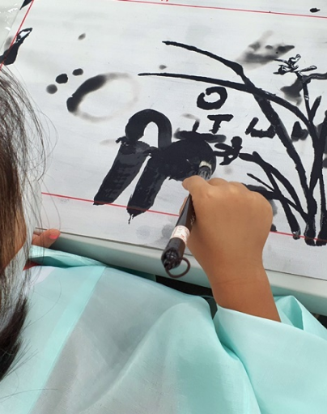
예로부터 선비의 강직한 기절과 학문을 숭상하는 인재의 고장인 영남의 선비들은 국난의 위기에 직면했을 때 군-관-민이 혼연일체가 되어 선비정신으로 나라를 수호하는데 앞장섰습니다.
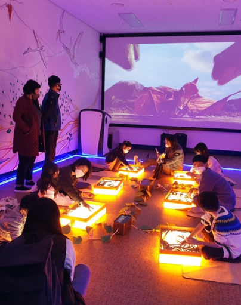
진주익룡발자국전시관은 2011년 지정된 천연기념물 제534호 진주 충무공동 익룡·새·공룡발자국 화석산지에 건립된 박물관으로, 진주 혁신도시 조성공사 중 일억여 년 전 살았던 다양한 생물들의 발자국 화석들을 보존·활용하기 위하여 2019년 11월에 정식 개관하였습니다.
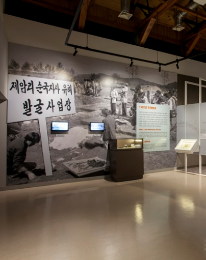
105년 전인 1919년 4월 15일, 경기도 화성에서는 무슨 일이 있었을까? 계속되던 일제의 가혹한 무단통치에 맞서 일어난 화성3·1운동은 일본인 순사 2명을 처단하고 주재소·면사무소·일본인 소학교 등을 방화할 정도로 공세적이고 격렬하였다.
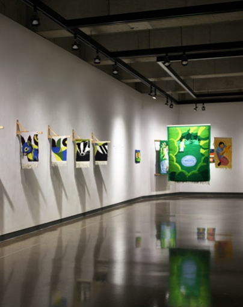
지난 2018년 5월 광주광역시 무등산 자락에 자리한 드영(De Young)미술관은 영원한 젊음을 모토로 개관하였다.
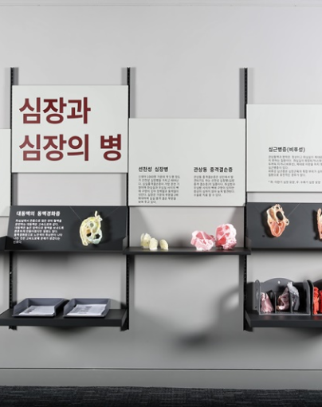
심장학 분야의 역사를 후대에게 전하고 심장 분야 지식을 보다 쉽고 정확하게 전달하기 위하여 심장박물관을 설립하였다.
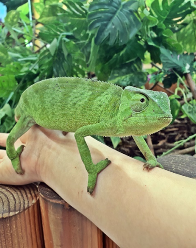
곤충을 좋아하는 당시 초등학교 6학년 아들이 지니고 있던 곤충학자의 꿈을 위해 서울에서 여주로 이주(귀농귀촌)하여 여주곤충체험학습장을 인수하게 되었습니다.
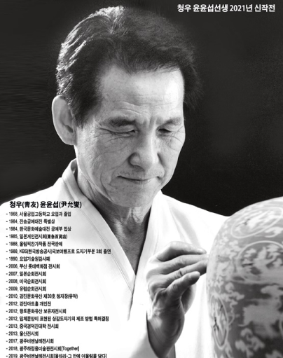
윤윤섭선생은 고등학교 졸업 후 요업센터(현 요업기술원)에서 일을 하면서 청자와 청자유약에 대한 관심과 열정을 가지고 연구를 시작하였다.
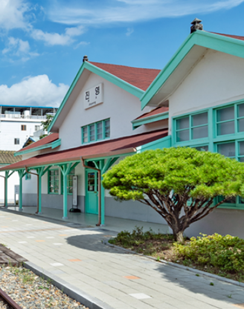
100여년이 넘는 시간 동안 지금의 자리를 지키고 있는 옛 진영역을 단장하여 개관한 철도박물관이다. 옛 역사(驛舍)의 모습을 간직 한 외관과 민트색 색상이 어우러져 레트로 감성을 전하는 SNS 사진 명소로도 유명하다.
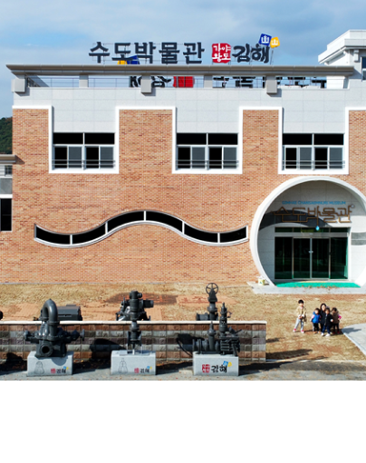
수도꼭지만 틀면 언제든 나오는 수돗물. 수돗물이 없는 현대 생활은 상상할 수 없다. 하지만 수돗물을 우리가 사용하게 된 것은 그리 오래된 일이 아니다.
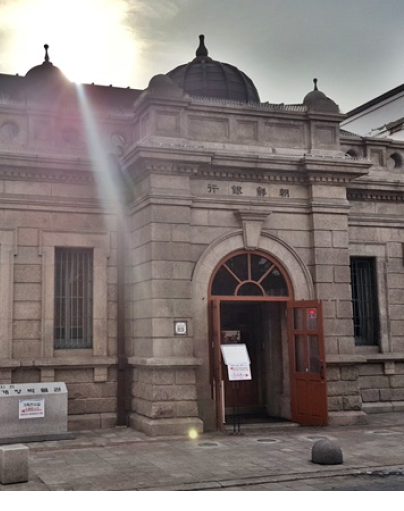
인천개항박물관은 2010년 10월에 개관한 전문박물관으로, 과거 (舊)일본제1은행 인천지점(인천광역시 유형문화재 제7호)으로 사용되었던 중앙 돔 형식의 후기 르네상스 양식 건물을 현재 박물관 건물로 사용하고 있다.
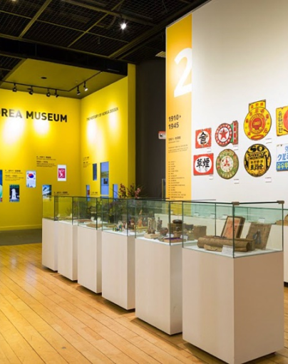
디자인코리아뮤지엄(Design Korea Museum)은 2008년 설립된 근현대디자인박물관을 모태로 설립된 우리나라 최초의 디자인전문박물관이다.
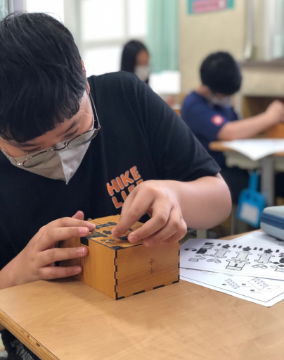
제주는 옛 탐라국으로부터 오늘에 이르기까지 타 지역들과는 구분되는 독특한 문화와 천혜의 자연경관을 가지고 있다.
박물관협회의 공지사항과 주요 정보
2024년 박물관 미술관 발전 유공 포상후보자 추천 공고 안내
2024년 박물관·미술관 박람회 기획전시(K-MUSEUM)참여 콘텐츠 모집
2024년 (공립, 사립, 대학) 박물관·미술관 학예사스미스소니언 국제연수 참가자 모집
[조사]폐기물 감축 가이드라인 수립 필요성 검토의견 요청
[마감] 박물관·미술관 종사자 문화유산 수집 윤리·실무 교육 개최 안내
박물관협회가 직접 쓰는 웹진
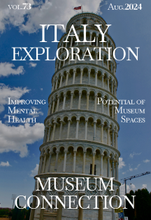
박물관을 통한 정신 건강 개선: 박물관 공간의 치유 잠재력을 탐구하는 이탈리아
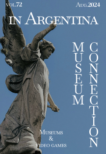
박물관과 비디오 게임: 아르헨티나에서 개발된 두 프로젝트의 이야기